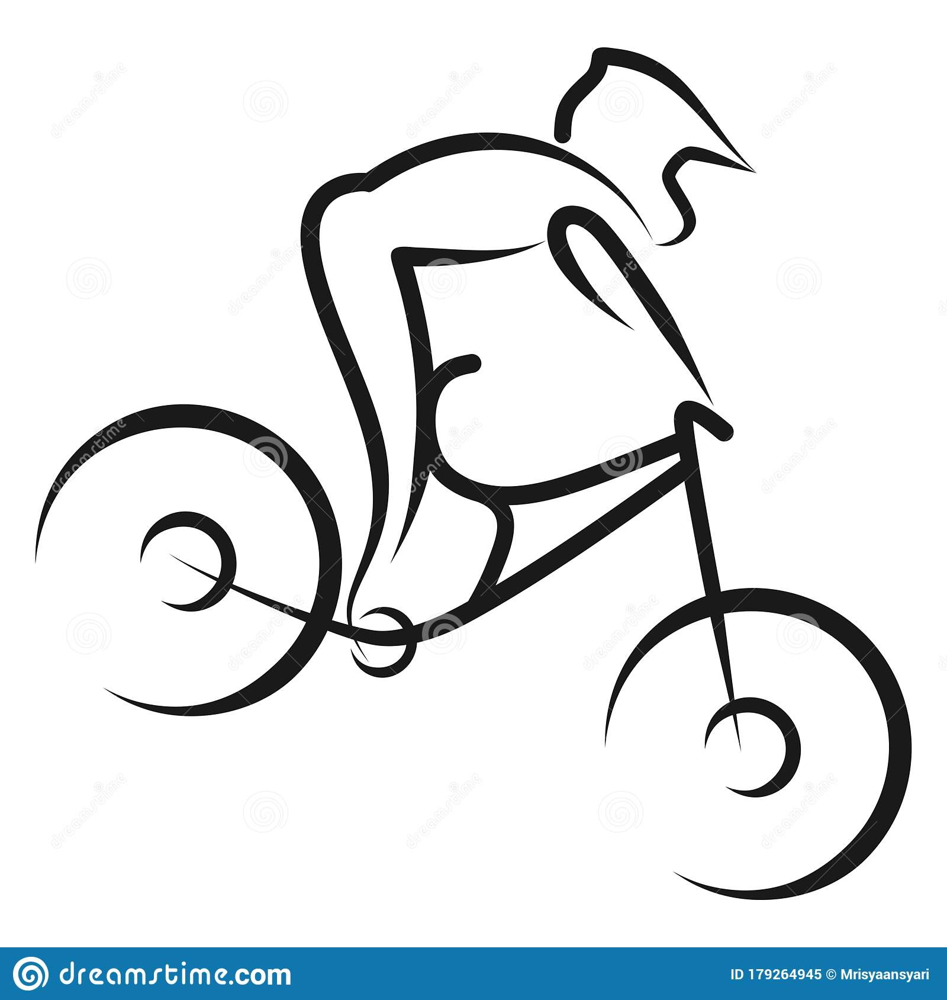

I'm' a Public Safety Dispatcher, learning System Admin
responsibilities and Python Automation.
Work Experience
~10 Years as a public safety dispatcher
Experience as acting supervisor
6 Years as a CTO helping to train new-hires
6 Years working on the tactical team working major incidents
Knowledge of working as an adminstrator with Motorola CAD. Experience including deployement, department configuratio
and troubleshooting related to user and configuration iossues
Experience using the deparment's database to craft reports that have been utilized to alter policy and upgrade equipment
1.5 years working as customer facing help desk at Blizzard Entertainment
10 years as a sales representative for Anheuser Busch
Education and certifications
Bachelors Degree from CSUSB in Business Administration (2012)
California POST certified as a public safety dispatcher
Amateur Radio License - callsign:KN6OLO
Google IT support specialist certified
Skills
SQL
EXCEL
Microsoft ACL
Motorola CAD Provisioning
Handheld radio maintenance and software updates

Hobbies
Self learning computer programming basics
Bicycling - Founder of Riverside Mountain Bike Association